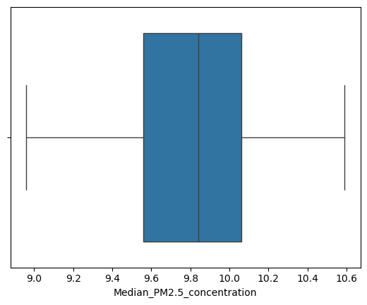

import pandas as pd
import geopandas as gpd
import folium
import seaborn as sns
import matplotlib.pyplot as plt Bridge over Brick Lane at Shoreditch High Street station, 2010.
© Copyright Ben Brooksbank and licensed for reuse under this Creative Commons Licence.
Particulate matter (PM) 2.5 target of 10 μg/m3 within reach for Shoreditch and surrounding districts
By Andrew Sivanesan
Executive summary
The London Enviroment Strategy: Fourth Progress Report states that “the Mayor aims for the capital to have the best air quality of any major world city, going beyond the legal requirements to protect human health and minimise inequalities” (Authority, n.d.). With this in mind: efforts to reduce the annual average concentrations of particulate matter (PM) 2.5 should be targeted at Shoreditch, Whitechapel, Hoxton, Haggerston and Bethnal Green.
Analysis of data from the London Atmospheric Emissions Inventory (LAEI) 2022 shows that these five districts have the highest annual average concentrations of particulate matter (PM 2.5) in Tower Hamlets and Hackney - two of the most deprived boroughs in London (Ministry of Housing, n.d.). While these five districts are achieving the World Health Organisation’s (WHO) third interim target of between 10 and 15 μg/m3 (Organization 2021a), they are within 1 μg/m3 of achieving the fourth interim target of between 5 and 10 μg/m3 (fourth). For context: the fourth interim target is being achieved by the rest of Tower Hamlets and Hackney. It is also an important step towards achieving the World Health Organisation’s Air Quality Guideline of less than 5 μg/m3, which minimises negative health impacts from PM 2.5.
An example of air quality improvement activity may include a public awareness campaign in the local area reminding local residents of the London Assembly’s recommendations for improving air quality (Assembly n.d.): listed below for ease of reference.
- Walk, cycle and scoot more, and avoid the busiest roads and times when you can
- Use public transport where you can, but if you do have to drive, switch your engine off when you’re stationary.
It’s recommended that any air quality improvement activities in these districts are done in partnership with community-led initiatives such as Breathe London Communities (Communities n.d.) to ensure relevance and buy-in from local residents.
What is PM 2.5?
PM 2.5 are fine particles with a diameter of 2.5 micrometres or less: meaning they are small enough to enter the bloodstream and get lodged in major organs such as the heart and brain. Typical sources of PM 2.5 include brake wear and tyre wear from road vehicles. Young children, the elderly and those with respiratory conditions (e.g. asthma) are at most risk of illness from PM 2.5 (Department for Environment n.d.). Therefore, reducing PM 2.5 near schools, hospitals and care homes is a priority.
Concentrations of a variety of pollutants - including PM 2.5 - tend to be higher in built-up inner city areas due to a combination of road traffic congestion (e.g. engine idling, repetitive braking) and lack of open space for pollutants to disperse into the surrounding atmosphere.
Why focus on PM 2.5?
A combination of health-based international guidelines, transport research and European legislation motivate a focus on PM 2.5. According to the World Health Organization, “the burden of disease attributable to air pollution is now estimated to be on a par with other major global health risks such as unhealthy diet and tobacco smoking, and air pollution is now recognized as the single biggest environmental threat to human health” (Organization 2021b). They set interim targets and air quality guidelines for a variety of pollutants including PM 2.5 (Organization 2021a). Non-exhaust emissions (NEEs) - particles from brake, tyre and road wear – are now a dominant source of urban particulate matter (PM) in Europe (EIT Urban Mobility, Greater London Authority (GLA), and e:misia n.d.). Furthermore, the Euro 7 emissions standard - which specifies rules for road vehicle emissions limits - will come into effect in a phased manner from November 2026 onwards. Euro 7 includes limits on emissions from brake wear and tyre wear: key sources of PM 2.5 (Council n.d.).
Why focus on Tower Hamlets and Hackney?
Tower Hamlets and Hackney are the two most deprived boroughs regarding income deprivation among children (Ministry of Housing, n.d.). Therefore, targeting air quality improvement efforts at these two London boroughs aligns with the Mayor’s aim “for the capital to have the best air quality of any major world city, going beyond the legal requirements to protect human health and minimise inequalities” (Authority, n.d.).
Background
Data sources (move to readme file)
- London Atmospheric Emissions Inventory 2022 (link here)
- WHO global air quality guidelines. Particulate matter (PM2.5 and PM10), ozone, nitrogen dioxide, sulfur dioxide and carbon monoxide. Geneva: World Health Organization; 2021. Licence: CC BY-NC-SA 3.0 IGO.
- London Atmospheric Emissions Inventory 2022 (grid emissions summary). London Datastore (link here)
- May 2025 Local Authority District (LAD) boundaries (filtered for Kingston Upon Thames). Open Geography Portal - Office for National Statistics. (link here)
Air quality desk research (move to bibliography file)
- Air quality - Transport for London (link here))
- Questions to the Mayor about car emissions - 9th Oct 2025 (link here
- Breathe London (link here)
- Pollution and Air Quality - London Assembly (link here)
- London Environment Strategy: Fourth Progress Report (March 2024) - Greater London Authority (link here)
- London Atmospheric Emissions Inventory 2022 Update (link here)
- English Indices of Deprivation 2025: statistical release (link here
- Particulate matter (Department for Environment, Food and Rural Affairs) (link here)
- London Assembly’s page on air quality (link here)
- Euro 7: Council adopts new rules on emission limits for cars, vans and trucks (link here)
Credits (move this to readme file)
- Python Graph Gallery (link here)
- Stack Overflow
Use of generative AI (move this to readme file)
Google Gemini and Microsoft Copilot were used to answer technical queries (e.g. about Python coding syntax, geospatial data visualisation) as well as queries relating to air quality and London. Accuracy of responses was confirmed by viewing the source web pages and adjacent online search results.
Technical notes (move this to readme file)
This analysis was conducted on a personal laptop with 4 GB of installed RAM and an Intel(R) N150 800 MHz processor. The laptop’s specification was intended for everyday web browsing and low-intensity office tasks (e.g. word processing, spreadsheets), not for processing high-resolution geospatial data for the whole of London. Anyone wishing to expand this analysis to cover the whole of London is advised to use hardware designed for processing large volumes of data (e.g. a high-specification laptop, a virtual machine) to maximise speed of code execution.
Import modules
Read in LAEI 2019 grid square shapefile
1 km x 1 km squares
The area covered by the LAEI includes Greater London (the 32 London boroughs and the City of London), as well as areas outside Greater London up to the M25 motorway.
fname_grid = "LAEI2019_grid.shp"grid = gpd.read_file(fname_grid)
grid = grid[grid["Borough"].isin(["Tower Hamlets", "Hackney"])]Read in PM 2.5 concentrations data
- High data resolution: 20 metre x 20 metre squares
- Circa 6 million rows of data
- Original dataset was split into chunks due to 100 MB file size limit on GitHub
chunks = range(1, 12)
# Define an easting and northing box for Tower Hamlets and Hackney
# According to the English indices of deprivation 2025 these are the two most deprived regarding
# income deprivation among children
min_easting = 530000
max_easting = 540000
min_northing = 178000
max_northing = 188000
# read in first chunk
df = pd.read_csv("LAEI2022_V1_PM25_chunk_0.csv").rename(columns={"x": "Easting", "y": "Northing"})
# append remaining chunks
for c in chunks:
add_df = pd.read_csv(f"LAEI2022_V1_PM25_chunk_{c}.csv").rename(columns={"x": "Easting", "y": "Northing"})
df = pd.concat([df, add_df])
# define filter condition for the easting and northing box
cond = (df["Easting"].between(min_easting, max_easting)) & (df["Northing"].between(min_northing, max_northing))
df = df[cond]gdf = gpd.GeoDataFrame(df,
geometry=gpd.points_from_xy(df["Easting"], df["Northing"]),
crs="EPSG:27700")grid_contains_points = grid.sjoin(gdf, how="inner", predicate="contains")
#grid_contains_points.head()Calculate median PM 2.5 concentrations for each LAEI 2019 grid square
The median (middle) value provides a representative PM 2.5 concentration for each grid square that isn’t skewed by the distribution of concentrations (including outliers).
# This cell is split into two lines of code purely for the benefit of readability
median_conc_per_grid_square = gpd.GeoDataFrame(grid_contains_points.groupby(["1km2_ID", "geometry", "Borough"])["conc"].median().reset_index())
median_conc_per_grid_square = median_conc_per_grid_square.rename(columns={"conc": "Median_PM2.5_concentration"})
median_conc_per_grid_square["Median_PM2.5_concentration"] = round(median_conc_per_grid_square["Median_PM2.5_concentration"], 2)
#median_conc_per_grid_square.head()# Median PM 2.5 concentrations are symmetrical: centred on 9.8 micrograms per cubic metre
# PM 2.5 concentrations straddle interim target 4 (10 micrograms per cubic metre) and interim target 3 (15 grams per cubic metre)
sns.boxplot(data=median_conc_per_grid_square, x="Median_PM2.5_concentration")
plt.show()
Categorise each grid square relative to the WHO 2021 interim targets and air quality guideline (AQG)
def WHO_guideline_categoriser(conc):
"""
This function categorises whether an annual average
PM 2.5 concentration meets the four interim targets or
the air quality guideline (AQG) level set by the World
Health Organisation in 2021.
Parameters:
conc (float): Annual average PM 2.5 concentration in micrograms per cubic metre.
Returns:
out (str): String indicating which PM 2.5 annual average concentration target has been met.
"""
if conc < 5:
out = "AQG guideline (5 micrograms per cubic metre)"
elif 5 <= conc < 10:
out = "Interim target 4 (10 micrograms per cubic metre)."
elif 10 <= conc < 15:
out = "Interim target 3 (15 micrograms per cubic metre)."
elif 15 <= conc < 25:
out = "Interim target 2 (25 micrograms per cubic metre)."
elif 25 <= conc < 35:
out = "Interim target 1 (35 micrograms per cubic metre)."
elif conc >= 35:
out = "Not achieving interim targets."
return outdef WHO_target_value(conc):
"""
This function categorises whether an annual average
PM 2.5 concentration meets the four interim targets or
the air quality guideline (AQG) level set by the World
Health Organisation in 2021.
Parameters:
conc (float): Annual average PM 2.5 concentration in micrograms per cubic metre.
Returns:
out (str): Integer indicating which PM 2.5 annual average concentration target has been met.
"""
if conc < 5:
out = None
elif 5 <= conc < 10:
out = 4
elif 10 <= conc < 15:
out = 3
elif 15 <= conc < 25:
out = 2
elif 25 <= conc < 35:
out = 1
elif conc >= 35:
out = None
return outmedian_conc_per_grid_square["Target"] = median_conc_per_grid_square.apply(lambda x: WHO_guideline_categoriser(x["Median_PM2.5_concentration"]), axis=1)
median_conc_per_grid_square["TargetValue"] = median_conc_per_grid_square.apply(lambda x: WHO_target_value(x["Median_PM2.5_concentration"]), axis=1)
#median_conc_per_grid_square.head()# 53 out of 73 grid squares in Tower Hamlets and Hackney meet interim target 4 (10 micrograms per cubic metre)
# All grid squares in Tower Hamlets and Hackney meet either interim target 4 (10 micrograms per cubic metre) or interim target 3 (15 micrograms per cubic metre)
median_conc_per_grid_square.groupby("Target").count()| 1km2_ID | geometry | Borough | Median_PM2.5_concentration | TargetValue | |
|---|---|---|---|---|---|
| Target | |||||
| Interim target 3 (15 micrograms per cubic metre). | 20 | 20 | 20 | 20 | 20 |
| Interim target 4 (10 micrograms per cubic metre). | 53 | 53 | 53 | 53 | 53 |
median_conc_per_grid_square.groupby("TargetValue").count()| 1km2_ID | geometry | Borough | Median_PM2.5_concentration | Target | |
|---|---|---|---|---|---|
| TargetValue | |||||
| 3 | 20 | 20 | 20 | 20 | 20 |
| 4 | 53 | 53 | 53 | 53 | 53 |
Visualise the median PM 2.5 concentrations on an interactive choropleth map
- Note: some grid squares contain more than one polygon. The colour of the grid square is based on the polygon with the highest median concentration of PM 2.5 within the square (even if that polygon constitutes a very small portion of the square). Examples include LAEI grid IDs 8173 (Waltham Forest), 8693 (Redbrige) and 9362 (Hammersmith & Fulham).
- Outer London boroughs and non-GLA areas are closest to achieving the air quality guideline (5 micrograms/cubic metre). However, they are typically the most affluent parts of London. It would be more socially equitable to target air quality improvement activities at more deprived London boroughs (e.g. Tower Hamlets, Newham).
london_centre = [51.51, -0.12]
# these two functions will be used in the tooltip
style_function = lambda x: {'fillColor': '#ffffff',
'color':'#000000',
'fillOpacity': 0.1,
'weight': 0.1}
highlight_function = lambda x: {'fillColor': '#000000',
'color':'#000000',
'fillOpacity': 0.50,
'weight': 0.1}
m = folium.Map(location=london_centre, zoom_start=11)
folium.Choropleth(
geo_data=median_conc_per_grid_square,
name="Median PM 2.5 concentrations",
data=median_conc_per_grid_square,
#columns=["1km2_ID", "Median_PM2.5_concentration"],
columns=["1km2_ID", "TargetValue"],
key_on="feature.properties.1km2_ID",
fill_color="plasma",
legend_name="WHO interim target").add_to(m)
folium.LayerControl().add_to(m)
tooltip = folium.features.GeoJson(median_conc_per_grid_square,
style_function=style_function,
control=False,
highlight_function=highlight_function,
tooltip=folium.features.GeoJsonTooltip(
fields=["Borough", "1km2_ID", "Median_PM2.5_concentration", "Target"],
style=("background-color: white; color: #333333; font-family: arial; font-size: 12px; padding: 10px;")
)
)
m.add_child(tooltip)
mMake this Notebook Trusted to load map: File -> Trust Notebook
Blue cells indicate higher PM 2.5 concentrations.
References
Assembly, London. n.d. “Monitoring and Predicting Air Pollution.” Accessed February 23, 2026. https://www.london.gov.uk/programmes-and-strategies/environment-and-climate-change/pollution-and-air-quality/monitoring-and-predicting-air-pollution.
Authority, Greater London. n.d. “London Environment Strategy: Fourth Progress Report (2018-2024).” https://www.gov.uk/government/statistics/english-indices-of-deprivation-2025/english-indices-of-deprivation-2025-statistical-release#:~:text=Two%20London%20boroughs%20(Tower%20Hamlets,use%20the%20indices%20of%20deprivation.
Communities, Breathe London. n.d. “About the Breathe London Communities Network.” Accessed February 23, 2026. https://www.breathelondon-communities.org/about.
Council, European. n.d. “Euro 7: Council Adopts New Rules on Emission Limits for Cars, Vans and Trucks.” Accessed February 23, 2026. https://www.consilium.europa.eu/en/press/press-releases/2024/04/12/euro-7-council-adopts-new-rules-on-emission-limits-for-cars-vans-and-trucks/.
Department for Environment, Food & Rural Affairs. n.d. “Particulate Matter (PM10/PM2.5).” Accessed February 23, 2026. https://www.gov.uk/government/statistics/air-quality-statistics/concentrations-of-particulate-matter-pm10-and-pm25.
EIT Urban Mobility, in collaboration with Transport for London (TfL), the Greater London Authority (GLA), and conducted by e:misia. n.d. “Study on Non-Exhaust Emissions (NEE) in Road Transport.” Accessed February 23, 2026. https://www.eiturbanmobility.eu/knowledge-hub/non-exhaust-emission-study/?utm_source=linkedin&utm_medium=organic&utm_campaign=promotion_2205.
Ministry of Housing, Communities & Local Government. n.d. “English Indices of Deprivation 2025: Statistical Release.” https://www.gov.uk/government/statistics/english-indices-of-deprivation-2025/english-indices-of-deprivation-2025-statistical-release#:~:text=Two%20London%20boroughs%20(Tower%20Hamlets,use%20the%20indices%20of%20deprivation.
Organization, World Health. 2021b. “WHO Global Air Quality Guidelines. Particulate Matter (PM2.5 and PM10), Ozone, Nitrogen Dioxide, Sulfur Dioxide and Carbon Monoxide. Licence: CC BY-NC-SA 3.0 IGO.” xiv.
———. 2021a. “WHO Global Air Quality Guidelines. Particulate Matter (PM2.5 and PM10), Ozone, Nitrogen Dioxide, Sulfur Dioxide and Carbon Monoxide. Licence: CC BY-NC-SA 3.0 IGO.” xvii.